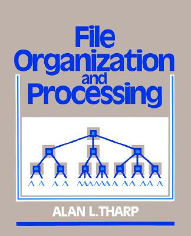

Horário: 3as, das 13h às 17h.
Início: 13 de setembro de 2016.
Repositório do código criado em sala de aula:
https://github.com/vigusmao/OrgDados2_2016_2
Ementa:
- Interpolation search;
- Range queries;
- Cartesian trees;
- Segment trees;
- Lowest Common Ancestor;
- Disjoint sets (Union/Find);
- String matching;
- Treaps;
- Interval trees;
- Fenwick trees (binary indexed trees);
- SQRT-decomposition;
- Fenwick trees;
Primeiro trabalho:
Busca interpolada.
Implemente o algoritmo da busca interpolada e compare seu desempenho com o algoritmo de busca binária, para vários tipos de entradas distintas.
Prazo: 27 de setembro, às 23:59. Entrega por e-mail.
Segundo trabalho:
Disjoint sets.
Implemente o algoritmo clássico para conjuntos disjuntos, com e sem union by rank, com e sem path compression. Compare os desempenhos.
Prazo: 26 de outubro, às 23:59. Entrega por e-mail.
Bibliografia sugerida
| File Organization and Processing | Introduction to Algorithms | ||
| (Alan L. Tharp) | (Cormen, Leiserson, Rivest & Stein) | ||
|  |  |
Conteúdo das aulas
13/09
Introdução: Tópicos Especiais em Como Derrotar o Código do Próximo. :-)
Ordenando uma lista imensa. Que perguntas são relevantes? Exemplo de ordenação possível em tempo linear: Count Sort.
Interseção de listas: método ingênuo; pré-ordenando e usando busca binária; usando hash sets.
Busca Interpolada (Interpolation Search).
20/09
Range Query: soma, mínimo. Cartesian tree.
Implementação dos algoritmos para interseção de listas: código em Python disponível aqui.
27/09
Segment trees. Método generalizável para problemas de Range Queries. Exemplos: mínimo, média, máxima subsequência parentizada corretamente.
04/09
Lowest Common Ancestor. Algoritmo linear (offline) de Tarjan.
Disjoint sets (Union/Find).